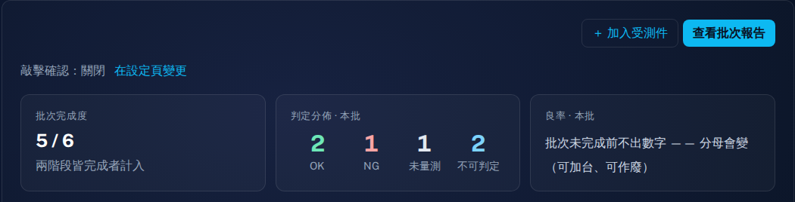
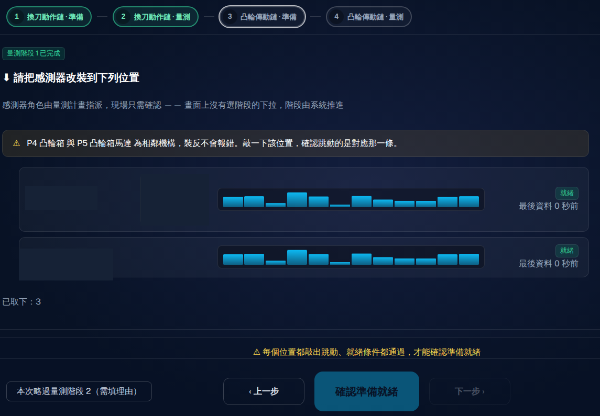

Harbor AI 2.0 品質檢測產品
Harbor AI 2.0
智慧設備出廠品質檢測平台
面向設備出貨前的逐件檢測，整合受測件、量測批次、基準比對、判定與報告；本人主導需求到現場交付。
- 我的工作
- 主導需求規格、系統開發、操作流程與量測防錯，協同工程夥伴及 AI agents 完成產品實作；負責到廠示範、教育訓練及現場排障。
- 成果與狀態
- 完成測試版本與手冊，於 2026.10.12 到場示範、教育訓練及處理連線問題；專案持續推進，正式驗收結果待確認。
- 紀錄時間
- 2026 年測試與整合紀錄
情境與目標
將同一套治具輪流量測不同受測件的作業，轉成可追溯的逐件品質檢測產品。
- 逐件追溯：同一套治具輪流量測不同受測件，保留身分、批次與結果關聯。
- 現場操作：將流程收斂為計畫、工單與看板，加入感測器檢核與人工複核。
- 交付分階段：功能交測、現場示範與品質門檻校準各自追蹤。
 設備檢測的現場操作與說明；保留完整構圖，其他人員臉部與識別資訊已去敏。（點圖放大）
設備檢測的現場操作與說明；保留完整構圖，其他人員臉部與識別資訊已去敏。（點圖放大）系統架構與流程
架構說明
- 輸入
- 受測件、量測批次、測點與良品基準。
- 處理方式
- 先檢查感測器安裝，再正式量測；以計畫、工單與看板組織日常操作。
- 產出
- 逐件檢測、判定、複核與報告，完成到廠示範、教育訓練及連線問題修正。
流程圖
 核心介面為計畫、工單與看板；門檻需現場校準，正式驗收待確認。（點圖放大）
核心介面為計畫、工單與看板；門檻需現場校準，正式驗收待確認。（點圖放大）操作介面與互動
以計畫、工單與量測工作區串起日常操作，透過狀態回饋、就緒檢核與集中操作減少層級切換。
 量測計畫原始畫面節選；機型識別已遮蔽，保留版本、狀態與操作層級。（點圖放大）
量測計畫原始畫面節選；機型識別已遮蔽，保留版本、狀態與操作層級。（點圖放大）
工單批次總覽節選；識別資訊已遮蔽，示範統計僅說明操作設計。（點圖放大）
量測準備與感測器就緒檢核節選；設備序號及安裝位置圖已排除。（點圖放大）1 / 3
關鍵設計取捨
讓同一治具能輪流檢驗不同出廠品
挑戰原監控模型假設設備常駐；現場卻要用同一組治具輪流量測不同受測件，結果不能混到同一設備歷史。
方法與取捨我主導需求規格、系統開發、介面與交付，將受測件、測點綁定與量測批次分開，讓比較、判定與報告能沿著每次檢測追溯。
結果形成另一項面向設備出廠品質的產品，完成測試版本與手冊，並到場示範及教育訓練。
把五、六層操作，收斂成三類核心介面
挑戰AI 依規格產生的首版功能與驗收規格都對，操作卻要深入五、六層；多個返回按鈕還會導向不同層級，甚至形成頁面循環。
方法與取捨我重整成計畫清單、工單與看板三類核心介面，將報告、複查、基準管理整併或改成對話框。依現場使用調整字體、狀態與待測物顯示，把前／後／主要動作集中中下方，加入方向鍵及 Enter。
結果介面重整後獲得 DQA 定性正面回饋；完成三類核心介面與操作動線調整。
讓操作防錯與品質判定各有檢核
挑戰現場可能把實體感測器配錯測點；流程能操作，也不代表出廠品質判定門檻已經有效校準。
方法與取捨我將確認與量測分步，顯示感測器編號及示意圖，用明確流程檢核預防裝錯，並加入狀態與感測器脫落提醒；同時將功能交測和需現場資料校準的判定條件分開，與品質及工程夥伴接續驗證。
結果完成可交測的功能鏈、手冊與現場示範／訓練，也為人員操作及品質判定保留各自檢查點；正式驗收結論仍待確認。
更多技術細節
需求與規格如何對齊
從多測點採集、基準重錄、插單與工單銜接釐清需求，再對齊受測件、量測批次、判定與報告。對外功能、內部工項及驗收條件使用同一作業流程。
現場問題如何回到產品
2026 年 10 月 12 日完成到場示範、教育訓練及排障，定位主機時間偏移造成的連線中斷並完成後續修正。現場回饋回到產品開發；到場活動不等於最終驗收簽核。
成果與驗證範圍
已完成的工作
完成測試版本與手冊，於 2026.10.12 到場示範、教育訓練及處理連線問題；專案持續推進，正式驗收結果待確認。
驗證與限制
功能流程已交測並完成現場示範；品質門檻仍需現場校準，正式驗收結果待確認。